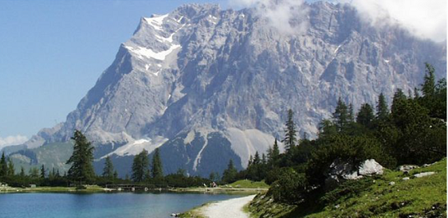
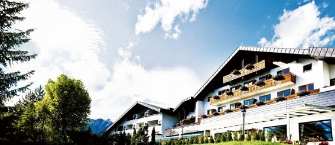
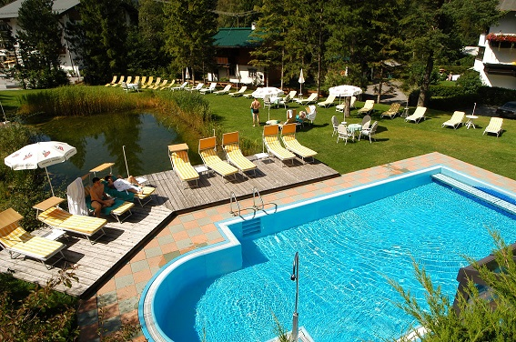
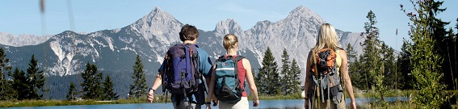
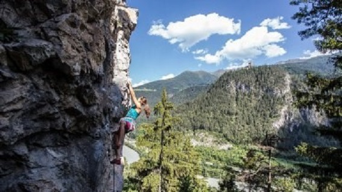
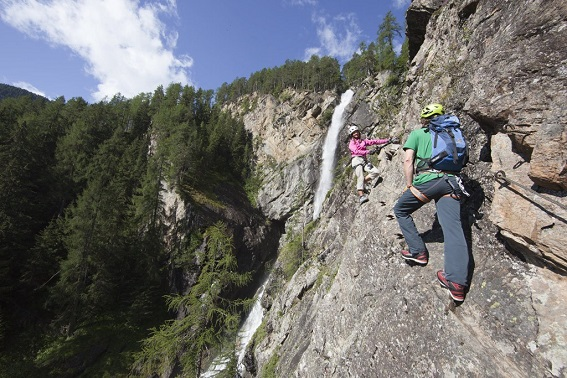

Welcome to ASIC 2019
The Eighteenth Annual Summer Interdisciplinary Conference, held at Hotel Bergresort in Seefeld, Austria.

The conference had talks every afternoon and evening on the six consecutive days, Monday June 17 to Saturday June 22, 2019 (the last talks were held the evening of June 22). The dates were chosen to reduce possible conflicts with the Cognitive Science Society meetings (July 24–27 in Montreal) and the Mathematical Psychology Meetings likely coordinated with that meeting.

Hotel Bergresort is highly rated, award-winning, and has spa facilities and a superb restaurant; see the hotel website. The meetings, catered breaks, and breakfasts and dinners were held in the hotel.
Seefeld
Seefeld is 20 km northwest of Innsbruck Airport, about 30 minutes by car. It lies on a plateau at 1,200 m elevation, amid mountains, adjacent to a peak rising to 2,300 m.
Activities
There are a huge number of outdoor activities in or near Seefeld, including hiking, mountain and road biking, rock climbing, mountaineering, via ferrata, parasailing, canyoning, touring, golf, tennis, and adventure parks.
Organizer
Richard M. Shiffrin of Indiana University – Bloomington is the organizer (see the Contact tab for all contact info).
About the conference
The subject matter of ASIC conferences is interdisciplinary, with a primary emphasis on a wide variety of scientific domains within the broad frame of cognitive science. ASIC follows the successful format of previous ASIC and AIC conferences: days are free for leisure activities and discussion among participants, talks are in the late afternoon and early evening, followed by dinner.
Invitation
The conference is open to all interested parties and their family and friends — no invitation is needed to attend. Due to the small number of speaking slots, if too many attendees wish to speak, the organizer adapts talk lengths and/or selects speakers.
Conference format
There is a single speaking session each day (no posters), intentionally organized to maximize the dissimilarity of each day's presentations. The conference began with registration and a reception with wine, beer, drinks and food from about 15:30–16:15 on Monday, June 17. On subsequent days there were drinks and light snacks from about 15:45–16:15, followed by a session of about seven or eight spoken presentations that may have included a mid-session drink break. The last evening of talks was Saturday, June 22.
For a listing of all past ASIC sites, see the previous ASIC sites document.
Registration
Registration was made through the Indiana University Conference Bureau, with the fee covering conference-room rental, equipment, and catering for breaks and receptions.
Fee schedule (US dollars)
| Payment window | Fee |
|---|---|
| Prior to January 1, 2019 | $300 |
| January 1 – March 1, 2019 | $350 |
| After March 1, 2019 | $400 |
Guest vouchers for others attending receptions, breaks, and dinners were $15 per day for breaks only. Each person not staying at the hotel who wished to join the buffet dinner there paid 45 euro (55 euro on Saturday), directly to the hotel.
Lodging
A block of rooms was held at Hotel Bergresort in Seefeld, Austria.

This award-winning hotel has good restaurants, a large conference room more than adequate for ASIC's needs, free parking, free internet, low-price pet accommodation, a health and wellness spa, fitness center, sauna, two pools, and a Jacuzzi; see the hotel website.
Lodging rates (inclusive, breakfast and dinner)
| Occupancy | Rate |
|---|---|
| One person | 145.80 €/day |
| Two persons in one room | 198.60 €/day |
Conference rooms
ASIC used the hotel's large conference room (168 m²), set up classroom style, well equipped technically, with space at the rear for the reception food and drink that started each session.
Parking & internet
Free and ample above-ground parking, underground parking at 5 euro/day, and free internet in both guest rooms and the conference room.
Reservations
To obtain conference rates, email the organizer for the conference code. Reservations could be made by email (bergresort@kaltschmid.info) or telephone (+43 5212 2191).
Cancellation policy
- Free up to two months prior to arrival
- 40% penalty: two months to one month prior
- 70% penalty: one month to one week prior
- 90% penalty: last week prior to arrival
Schedule
Each day began with a reception with refreshments and light food near or in the conference room, starting about 15:30–15:45. Talks ran roughly 16:00–20:00, followed by group dinner no later than 20:15.
Dining & Receptions
A generous breakfast was included in the daily lodging price, available starting at 7:30 AM.
A five-course dinner was served in the hotel restaurant when sessions ended, including vegetarian and vegan choices. No dinner seatings were allowed after 20:15, so conference sessions were scheduled to end in time for the group to move to dinner.
Daily receptions
Each day there was a catered reception with drinks and finger food, likely sited at the rear of the conference room, prior to the speaking session — about 15:15 on June 17, about 15:45 on subsequent days. The registration fee covered these receptions; guests and family members attending only receptions had a reduced registration fee.
Travel
Hotel Bergresort is in Seefeld, about 30 minutes by car or train from Innsbruck Airport.
By car from Innsbruck Airport: Use B171 to A12, 5.5 km to B177, then B177 16 km to Seefeld; exit at Münchner Straße and drive south 400 m to the hotel entrance. The hotel has free above-ground parking and underground parking at 5 euro/day.
By train from Innsbruck Airport: Trains run every 20 minutes; travel time is about 30 minutes. Tirol Bahnhof in Seefeld is about 1.3 km south of the hotel along Münchner Straße. A variety of taxi and limo transfer options are also available; the hotel can arrange airport transport and, with advance notice, free shuttle service from the Seefeld train station.
Other airports to consider: Munich (162 km, about 1 hr 50 min by car) and Salzburg (200 km, about 2 hrs by car).
Activities
Numerous outdoor and adventure activities both in the immediate Seefeld area and within a day tour and return by 16:00.

Hiking
See seefeld.com/walking, including its "ten most beautiful summit tours," and tyrol.com.
Rock climbing
Numerous regions offer sport climbing and bouldering at all difficulty levels; see climbers-paradise.com and tyrol.com. The guidebook Sportclimbing in Tirol (2014, German and English) is recommended. As usual, ASIC offered one or two group climbing days at reduced pricing, aimed at all climbers but particularly newcomers, with topropes placed for novices and more challenging routes for stronger climbers in the same area.

Canyoning
See tyrol.com — participants don wetsuits and, with guides, descend a mountain stream in a narrow canyon, suitable for families and children.
Parasailing
Tandem flights with an expert guide; see seefeld.com/paragliding.
Road & mountain biking
The Seefeld area has many opportunities for both forms of biking; see seefeld.com.
Via ferrata
The Seefeld region has numerous via ferrata — mountain paths and cliffs affixed with cables and ladders, offering safe passage even in the event of a slip or fall, suitable for all including children and families.

Leisure activities
The area has many leisure activities particularly suitable for family and children, including golf, tennis, and adventure parks.
Contact
Email is preferred for all correspondence.
Conference organizer
Rich Shiffrin
Indiana University – Bloomington
shiffrin@indiana.edu
Tel: 812-855-4972 · Fax: 812-855-9871
Webmaster / Conference Coordinators
Ruth Eberle
Phone: (812) 856-5722
reberle@indiana.edu
Oyedotun Oyesanmi
Phone: (812) 855-6420
oyesanmi@iu.edu
Postal address
Annual Summer Interdisciplinary Conference (ASIC 2019)
c/o Prof. Richard Shiffrin, Psychological and Brain Sciences Department
Indiana University, 1101 E. 10th St., Bloomington, IN 47405